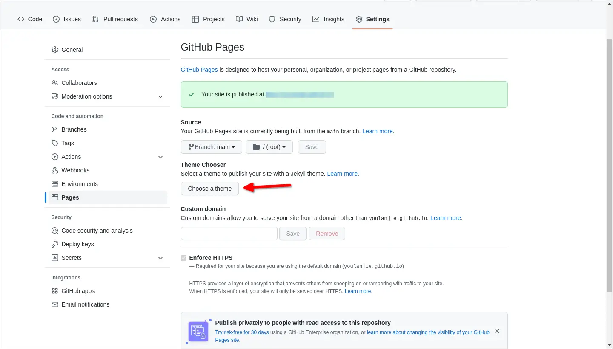
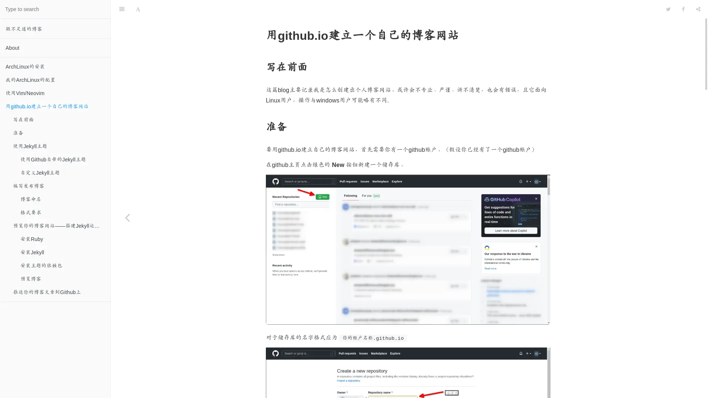
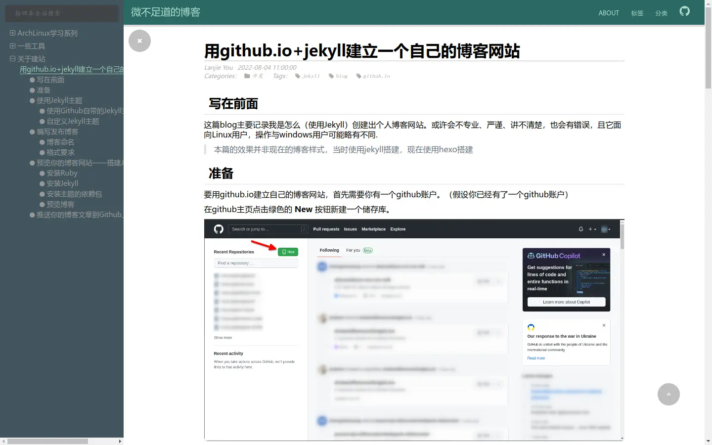

使用github.io托管自己搭建的博客网站(重置)
Table of Contents
1. 前言
本文由两篇老文章整理而成(旧的文章已经删除)本文收录了Jekyll.Hexo,Hugo,Emacs Org三种大众主流和一种小众搭建blog的方法，由于三种主流方法已经许久未碰，难免会有错误之处，以官方文档为准
如果需要跳转到对应程序，右上角目录跳转不谢
目前本blog使用Emacs Org构建
1.1. 关于github.io
github.io好像有个正式名称叫Github Pages?那不重要。根据我的理解，Github Pages应该是一个用于托管静态网页的这么一个平台，常用于开源项目的项目主页，可以通过它来托管自己的博客网站达到搭建个人博客的目的
基础使用方式：在github上创建一个仓库，以 你的账户名称.github.io 格式为名新建一个仓库，这个仓库理论上就是一个会用于部署github pages的仓库
怎么用github自己上网百度，这点信息搜索学习能力还是得有的吧？
github pages部署默认用的jekyll，如果往仓库丢了个jekyll项目则会调用jekyll生产网页，否则直接把仓库的文件挂作网页
2. Jekyll
刚创建好的仓库是空仓库（没有提交）。如果需要使用Jekyll搭建博客就可以在Github Web 端选择设置一个Jekyll主题并产生一个初始提交到仓库，也可以手动用git把仓库clone下来自定义主题或者使用其他的静态blog工具
我们先说前者
2.1. 使用Github预设的Jekyll主题
在仓库创建后你可以在仓库界面的 菜单 -> Settings -> Pages 界面中点击按钮 Choose a theme

Figure 1: 界面位置
选择一个Jekyll主题会提交更改(空仓库则顺带把jekyll项目初始化好了)以形成一个初始的界面
2.2. 自定义Jekyll主题
2.3. 编写发布博客
2.3.1. 博客命名
根据Jekyll官方文档的要求，博客文件应当放置在 仓库根目录/_posts/ 文件夹下,以 YEAR-MONTH-DAY-title.MARKUP 的格式对文件进行命名。推荐使用markdown编写blog(可能还能用html?)。
2.3.2. 格式要求
(markdown)博客的头部应该有以下内容：
--- title: 这里填写文章的标题，填了就不用写一级标题了 author: 用户，我不太清楚它有什么用 date: 博客的编写时间（YYYY-MM-DD），填写了时间就会安装文件内部的时间来生成网页（而非文件名） category: Jekyll （分类） layout: post （必不可少的内容，标识文件的类型为博客，否则本地预览时一般会出现问题：没有应用主题） cover: 标识文章的封面图像 ---
其中， layout: post 十分重要，如果文章里没有它，那么（本地预览）打开文章时不会应用主题到上面去（至少我测试时是这样的）
而 date: YYYY-MM-DD 日期也不止是可以这样，你还可以写成 date: YYYY-MM-DD HH-MM-SS +8000 的形式。即包括时间及时区（+8000是时区）。如果当前日期时间在文章标注的时间前是不会构建文章的内容为html的
封面有无图像效果对比：

Figure 2: 无封面
Figure 3: 有封面
2.4. 本地安装Jekyll以进行预览
由于博客网站推送到远程再进行构建会有一定的延迟，网络也算不上特别好，谁也不希望自己的git commit乱成一锅粥，因此在本地安装Jekyll是有必要的
在ArchLinux安装：
sudo pacman -S jekyll ruby-rake ruby-bundler ruby-minima
快忘了这里还有只安装ruby手动安装jekyll的方法了，不常用
gem install jekyll
2.4.1. 安装主题的依赖包
因为不同的主题会使用到不同的包，会有不同的依赖，具体的可以查看项目目录下的 Gemfile ，里面会有一些类似于下面的内容
gem "jekyll" gem 'jekyll-feed' gem 'jekyll-readme-index' gem 'jemoji' gem 'webrick'
基本上安装文件中的引号中的包（名）就不会报错
gem install xxx #xxx为包名，需自行替换
不知道为什么，我运行jekyll预览时会报错，含有
webrick等字样查了半天才找到了解决办法：bundle add webrick
2.4.2. 预览博客
在终端执行命令：
jekyll serve
顺带一提，想要在本地创建一个默认的jekyll博客项目，就在终端执行：
jekyll new 你的项目名称（文件夹）不过这样可能会有一些慢
2.5. 推送你的博客文章到Github上
在一篇blog写完后就可以执行
git add --all #添加所有文件 git commit -m "你想要给这一次提交做的注释" #进行提交 git push #推送更新到Github上
将更新推送到github上，等待一会之后你的博客网页（应为你的仓库名，如https://your_user_name.github.io）就应会刷新
3. Hexo
根据前面所述，Github Pages还支持部署现成的网页，所以除了Github原生支持的Jekyll外，我们还有其他的解决方案，Hexo便是其一
3.1. 开始
Hexo使用Node.js编写，是一个博客引擎。安装方法参考官网：
建议在
$HOME/.npmrc中添加以下内容以使用更快的镜像站下载：registry=https://registry.npmmirror.com/
$ npm install hexo-cli -g
安装后可以在终端执行命令
$ hexo init blog
在名为 blog 的文件夹中创建默认的博客主题网站。现在则可以执行以下命令安装主题需要的nodejs包
$ npm install
最后使用以下命令开始博客预览
$ hexo server
3.2. 使用主题
网上有众多主题，到底应该怎么使用呢？
最基本的，当我们找到一个主题之后应当在它的Github项目页面查看README文件了解这方面的内容，不过大都脱离不开这样的一个流程：
- 克隆仓库到本地
- 将克隆出来的仓库放到博客根目录下的
theme目录下。 - 编辑主题和博客的配置文件。这一步通常较为繁琐，一般要看主题提供了什么功能和什么注释。
3.3. 一些优劣/我选择它的原因
- 速度快它使用nodejs构建，解释速度快（相较于Jekyll）
- 主题丰富（不知道算不算一个优势）
- 安装部署方便他可以将博客一键布置到github上(注意，如果是从其他的博客引擎迁移过来的要小心， hexo会新建一个仓库把构建好的文件丢进去，然后把那个仓库强制推送到你指定的仓库，原有的commit就相当于是被抹除了，如果需要保留要自己另外备份)
- 配置相对麻烦这似乎是个通病，只要换一个主题，就少不了大批量重新配置的需要，因为主题里面也需要更改配置。
- 原生不支持Org文件写博客这点可以算是打油的，这只是我的个人需求，实际上Markdown的功能也足够丰富了
3.4. 成果展示

Figure 4: 我过去使用hexo构建的博客图片
4. Hugo
同Hexo，Hugo也是一个博客引擎，具体的看下面
4.1. 简介
Hugo是一个用Go语言编写的静态博客引擎。而相较于Hexo，它所拥有的为数不多的优势是原生支持Org文档解析，但因为前段时间它生成博客出错1，才让我抛弃它。它的主题相对会较少，请酌情选择。
4.2. 安装
由于我是Arch Linux环境，所以我这里只提Arch的安装办法，其他的请参考官网，理论上各大发行版是拥有hugo软件包的。
$ sudo pacman -S hugo
4.3. 使用
老教材的只言片语：
这里参考官网的教程，操作基本没有坑，除了选主题有点麻烦之外，这里便不过多赘述。（实际上是我比较懒，不想写）2
如果英语水平好（或者直接抄翻译），完全可以照着 hugo help 输出的帮助搞，他自己的帮助输出也是挺完善的，当然看blog也不差啦
新建一个blog使用以下命令(其中 path/to/blog 是你想要新建的blog目录途径)：
$ hugo new site <path/to/blog>
如果成功的话应该会有类似以下的输出：
Congratulations! Your new Hugo site was created in /path/to/your/blog/dir Just a few more steps... 1. Change the current directory to /home/Chglish/WorkSpace/tmp. 2. Create or install a theme: - Create a new theme with the command "hugo new theme <THEMENAME>" - Or, install a theme from https://themes.gohugo.io/ 3. Edit hugo.toml, setting the "theme" property to the theme name. 4. Create new content with the command "hugo new content <SECTIONNAME>/<FILENAME>.<FORMAT>". 5. Start the embedded web server with the command "hugo server --buildDrafts". See documentation at https://gohugo.io/.
人工机翻下就是：
- cd到你新建的博客目录下
- 用命令
hugo new theme <THEMENAME>新建一个主题或者从网上下载安装一个主题 - 编辑
hugo.toml设置theme属性为对应的主题名称(即往文件里添加theme = "<THEMENAME>") - 用命令
hugo new content <SECTIONNAME>/<FILENAME>.<FORMAT>新建一篇文章 用命令
hugo server --buildDrafts进行预览
但是呢，坑也是真的坑， hugo new theme ... 只是建立了个骨架，并没有实际的主题。如果从网上下载个主题放到 theme/ 目录下，参照主题的README之类的提示配置后，一个 hugo server ，就有种绝望叫做点进去发现显示的是 Page Not Found
我能给出的也就只有一点建议了
- 查看所有输出提示信息（一点都不要落）
- 检查配置文件是否正常，是否只有一个配置文件？
- 检查文章文件格式是否有问题
5052年了，应该学会用ai了吧？（话说回来这年头都有ai了还有必要查blog么？）
综上，但愿你看见的是一个能用的网站，而不是错误
5. Emacs Org
5.1. 简介
上面的三套，Jekyll和Hexo都不支持emacs-org文件，hugo是支持markdown和org，而我这套方案则是只支持emacs-org格式（用markdown可以划回去看上面三种）
简单地说就是手动编辑所有的页面保存为org文件，然后用emacs打开并导出成为html文件构建网页，所以说没有博客引擎方便，但纯手动也意味着自己知道整个网站的架构如何以及是如何运行的，还有挺高的自由度（可以整出一点“骚操作”）
当然，这只是我自己用的一套方案，不一定好用，简单看看图一乐就好（当然，如果真想折腾可以看看学学）
5.2. 使用
粗略地说，用emacs+org搭建blog的途径如下：
- 首先，你得先学会使用emacs和org-mode
- 其中，需要学会 Emacs基础按键
- Org-mode 的基本语法
- Emacs导出.org文件的方法
- 配置org导出html主题的方法
- 其次，你需要学会用git和github
github创建github pages仓库（详见上面Jekyll部分）
具体的主题配置大致流程如此：克隆你的github pages仓库，然后从网上下载你想要使用的主题需要的css文件和js文件到博客下的任意一个目录，然后创建一个setup文件引用这些文件，像是该文章所引用的setup file：
由于这个setup file采用js动态加载，所以说没有代码高亮（w3m这种终端浏览器甚至可能加载不出来）
有些主题会有README文件教你怎么用，甚至直接提供现成的setup file，例如我之前用过的主题
setup file类似于一个org文件，里面的语句基本都是org文件的内容，在每篇文章里面添加类似于这样一行内容就可以对这个setup file进行引用(文件路径要自己改)：
#+SETUPFILE: ./path/to/file.setup
值得注意的是，如果是 begin_export: html 里面的链接可以使用“绝对路径”，但是如果是只在org文件正文里面的链接则需要用相对链接。因为在网页中可以使用 / 表示网站的根目录（即只有域名的url）,而org的链接默认是文件，除非加上 http: 的协议头才会识别成网络链接
5.3. 本地预览
由于我的blog采用了 / 作为根目录进而引用css和js文件，所以说正常情况下直接打开文件是没有样式的，这时候就需要搭建本地服务器对blog进行预览了。我接触过的软件有三种：
python http.server
使用此方法极其简单，请确保你安装了python，然后在项目根目录执行命令：$ python -m http.server
这样就会启动一个http服务器，默认端口是8000，默认打开文件夹下的
index.html文件，如果没有，则会生成含有当前目录下所有文件和文件夹的html页面用于流览。即使是根目录有404.html也不会重定向过去。优势在于它是python自带的模块，使用方便，但是另一方面这玩意下载文件下一半取消下载还会报错，要不是问ai我还不知道这玩意http-server
使用此方法（请确保你安装了nodejs），首先在终端用root权限运行:# npm install http-server -g确认安装成功和就可以在博客根目录下使用命令
http-server启动一个http服务器，默认端口是8080，终端会有服务的地址显示的。顺带一提，它在访问没有index.html的目录时且没有404.html文件时会自动生成返回当前目录下的所有文件与文件夹。可以当做局域网的文件单向传输器。（区别于python方法，此http-server在没有发现有 index.html时会尝试打开根目录的404.html，如果也没有再进行索引页生成，更接近正常服务器的逻辑）- nginx
nginx的学习与配置或许可以参考其他的文章或者我未来写一篇nginx的教程。
5.4. 上传到Github
在转录好html文件后就可以git commit然后git push到github上了
这里可以考虑是建立一个独立的目录仅仅把html等网页需要的文件上传，还是直接把org文件和html文件一起打包带走。我个人懒，所以是org和html混合一起的。唯一的缺点就是会重复占用空间。
5.5. 自卖自夸
但是吧，org这东西自由是自由了，就是有个缺点：emacs它好像有点慢。。。
比方说，这里有一个脚本（用于生成一系列的org文件并导出），在以共计300个文件夹5489个文件的目录下执行，创建并导出了一共301个org文件（还有一个是索引页），耗时如下(约347s)：
./org_html_export.sh 357.26s user 27.86s system 110% cpu 5:47.10 total
就上面这个速度，差不多是一个文件1秒多，而这是在使用单独启动Emacs的结果，如果在相同的环境下使用服务器(EmacsServer)(需要改换成这个脚本)，则结果如下(共计约18秒)
org_html_export.sh 4.82s user 2.98s system 43% cpu 17.992 total org_html_export.sh 4.86s user 2.98s system 42% cpu 18.283 total
看得出来，这样快了不少（直接砍没了94%的时间），但是，还能更快么？这时候就得自卖自夸了。我花了点时间，搓出来了这么个程序，样式基本上仿照Emacs导出的样式搞的，所以说css和js这些文件基本通用，大体上是能够“偷梁换柱”的了。所以说，我们只需要下载py程序，加好权限，并且把脚本的 emacsclient ... 换成 ./orgreader2.py -Oi "$1" 测试下执行时间：
./org_html_export.sh 46.54s user 8.09s system 104% cpu 52.217 total ./org_html_export.sh 46.91s user 8.21s system 104% cpu 52.701 total ./org_html_export.py 43.70s user 5.43s system 99% cpu 49.417 total
我也很困惑，不过我想了想这是shell，那就合理了。这里有个问题就是，python和emacs一样也是需要初始化的，也就是说那它来和Emacs Server来比是不公平的，所以说我们应该掏出一个对等的方案来。没错就是org_html_export.py。在py脚本内以导入模块的方式可以节省初始化时间，这样一测，结果如下：
org_html_export.py 2.78s user 0.28s system 91% cpu 3.347 total
至少通过以上内容，我自己写的垃圾玩意速度取胜了。虽然说在同一个进程内python相较于 shell会有速度优势，但是我也测试了将py脚本改成使用subprocess运行情况下的速度（就在上面俩sh一个py的那个py），速度也没好到哪里去
顺带一提上面的那个调用Emacs Server的sh脚本在export_file的命令那儿加上
&可以进一步缩短时间（因为是多进程了hhh）结果如下：./org_html_export.sh 5.02s user 3.79s system 61% cpu 14.272 total ./org_html_export.sh 4.97s user 3.60s system 60% cpu 14.264 total ./org_html_export.sh 4.95s user 3.48s system 60% cpu 13.978 total而将其改为调用orgreader2.py后挂后台的结果如下：
./org_html_export.sh 112.28s user 19.95s system 891% cpu 14.831 total ./org_html_export.sh 125.39s user 22.23s system 947% cpu 15.576 total ./org_html_export.sh 113.32s user 20.01s system 896% cpu 14.864 total ./org_html_export.sh 125.24s user 22.41s system 946% cpu 15.596 total ./org_html_export.sh 105.44s user 18.80s system 880% cpu 14.106 total看来还是略逊一筹啊
总而言之，我这blog的网页就是用这玩意撅出来的，当然，和Emacs原生导出的内容基本一样哈(除了大量的部分功能不支持)
5.5.1. 新DLC之构建脚本
之前还在使用Emacs原生导出的时候，我是使用shell脚本进行一个构建的，现在的话由于构建用的程序用的python，所以也搞了个python构建脚本（原来的就被删掉了），并顺带实现了主页和时间轴(一般被叫做Archieve页面)的自动生成，终于脱离了手动构建了（虽然说由于引进了个python工具导致根目录乱糟糟的了。。。）
很好，这个“新”的构建脚本也给我丢到my-test仓库里去了，不过也还有访问链接